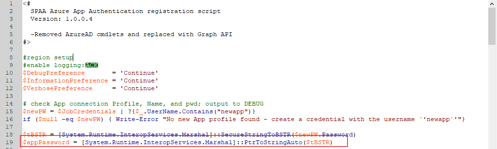

IMPORTANT: This is a work-in-progress article. The product R&D team has yet to review some or all of the information below.
Symptoms
When running the SharePoint Job Group and attempting a connection to SharePoint Online, the following issues appear:
-
There is a failure in the connection attempt.
-
The system generates the following error message:
Error C:38 - Unable to Connect to SharePoint Online
Cause
The PowerShell (PS) script used in the SP_RegisterAzureAppAuth Job was not configured to use the password associated with the temporary connection profile.
Resolution
To resolve this error, please refer to the following steps:
-
Replace the app password value within the PS script with the password associated with the Azure AD connection profile.
 -
After updating these lines within the PS script and the connection profile, you should then be able to successfully run the SP_RegisterAzureAppAuth Job that generates a new connection profile and automatically opens a browser to confirm permissions.
NOTE: For more information about the SP_RegisterAzureAppAuth Job, please see the following article: SP_RegisterAzureAppAuth Job.
-
Once the new profile is created, add the newly generated .pfx file into the generated file path along with the password for the connection profile into the SharePoint connection profile.
-
You should then apply the newly generated connection profile to the SPAA system scans job. This should successfully connect you to the SharePoint site.